Your Private Teacher. For Anything. For Life.
A personal AI tutor for ages 2 to 60+, rebuilt as a native SwiftUI app. Not an LMS and not a chatbot: the tutor is the main character of every screen.
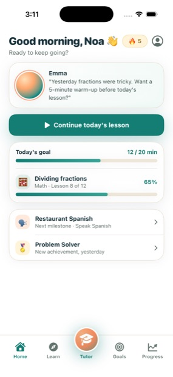
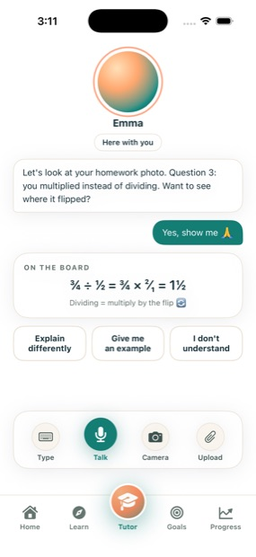
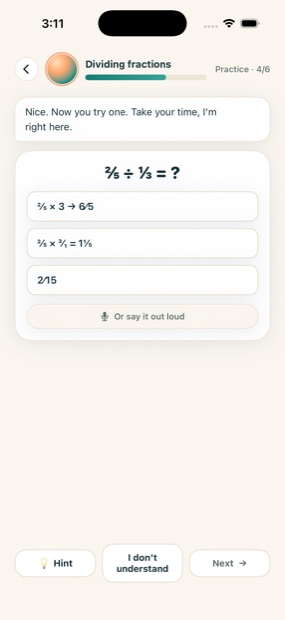
Mentora is a compiled SwiftUI iOS app. It cannot run on the web, so every image below is a real screenshot captured from the app running on an iPhone 17 Pro simulator, iOS 26.5. Nothing here is a mockup or a render.
To run it: open Mentora-iOS/Mentora.xcodeproj in Xcode and press Run. To put it on a phone, the route is TestFlight, which needs an Apple Developer account.
Onboarding hands you a tutor. The tutor speaks first, with memory of yesterday. One primary action, then a lesson that behaves like a conversation rather than an article.
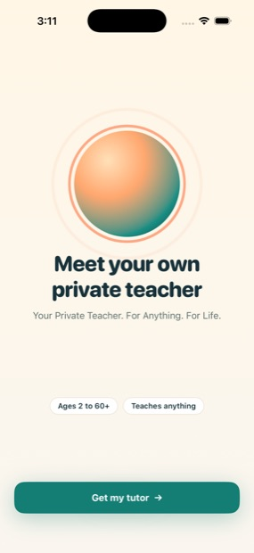
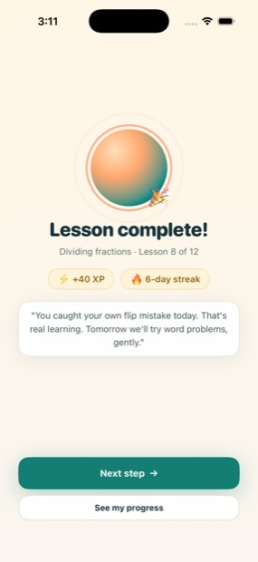
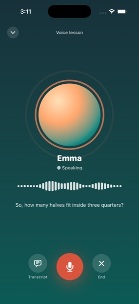
The age band is structural, not a skin. It changes the tab bar (five tabs, or three for ages 2 to 7), the type scale, the copy register and the density.
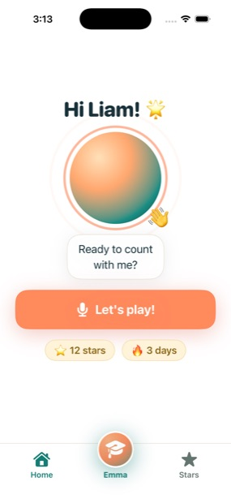
Voice first. One giant button, stars instead of statistics, three tabs, type scaled up 15%.
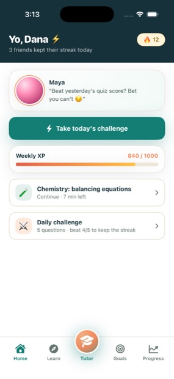
Ink header, weekly XP, daily challenge, light social proof. Gamified without being childish.
The default look. Clean, goal-oriented, one primary action and no stat grids.
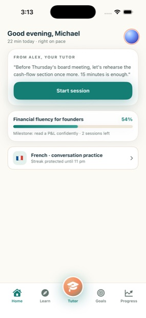
Quiet and efficient. Smaller type, outcome-tied copy, gamification reduced to a whisper.
Every colour token is adaptive. Neither mode uses pure black or pure white, and every foreground and background pair in the app meets WCAG AA in both.
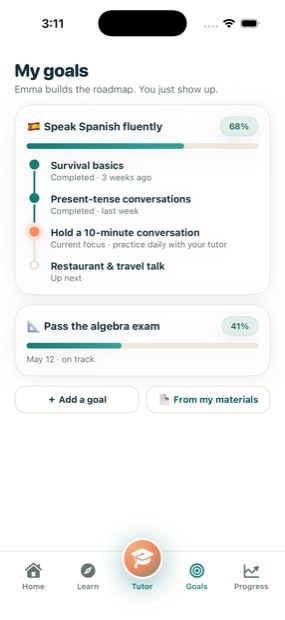
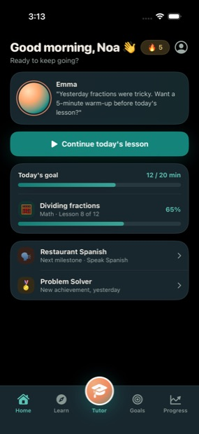
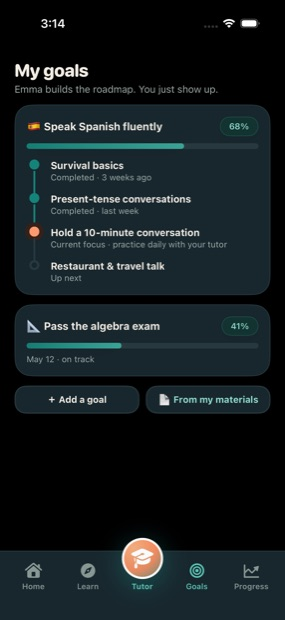
Mentora can run its tutor against a self-hosted Open TutorAI CE server. That project is Python and Svelte, so there is no Swift to reuse: the app ships a client written against its HTTP API. Without a server every screen still works on built-in content.
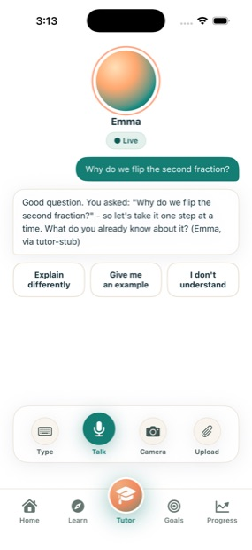
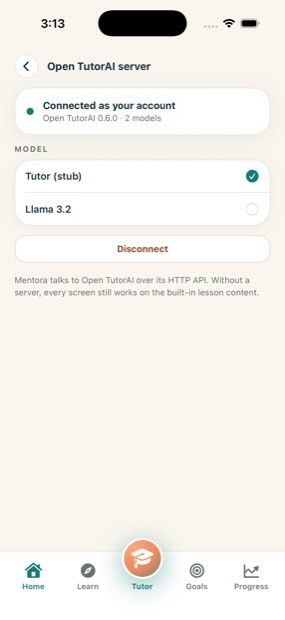
| Mentora screen | Endpoint |
|---|---|
| Tutor, live replies | POST /api/chat/completions |
| Tutor, quick actions | same, as learner turns |
| Learn, your materials | GET /api/v1/supports/list |
| Course from materials | POST /api/v1/supports/create |
| Sign in | POST /api/v1/auths/signin |
| Model picker | GET /api/v1/models |
The learner's age, tutor, level and goal are compiled into the system prompt. That is what makes one backend feel like four different tutors. The session token lives in the iOS Keychain; the password is never stored.
Three hues with fixed roles, and never more than three on a screen. Teal carries action and trust, apricot is the tutor's warmth, sun is reserved for streaks and rewards.
Five foreground and background pairs failed WCAG AA in the first build. The two worst were primary navigation and the largest button in the ages 2 to 7 experience.
| Pair | Was | Now |
|---|---|---|
| Inactive tab labels | 2.49:1 | 4.86:1 |
| White on apricot | 2.32:1 | 4.00:1 |
| Secondary text | 3.64:1 | 4.85:1 |
| Needs-practice amber | 3.21:1 | 4.53:1 |
| Disabled button | 1.73:1 | 5.23:1 |
The same Home screen, carrying the five situations the brief asks the product to handle.
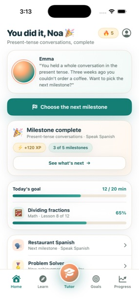
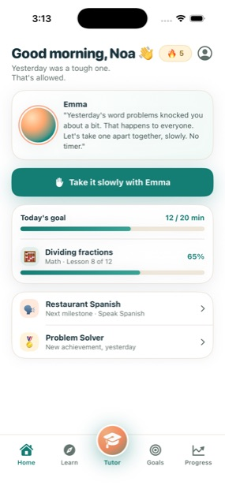
Twenty-two screens, all captured from the running app.
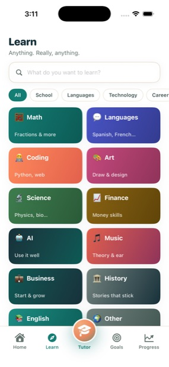
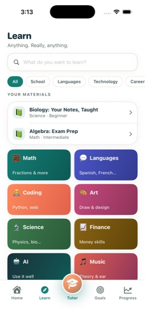
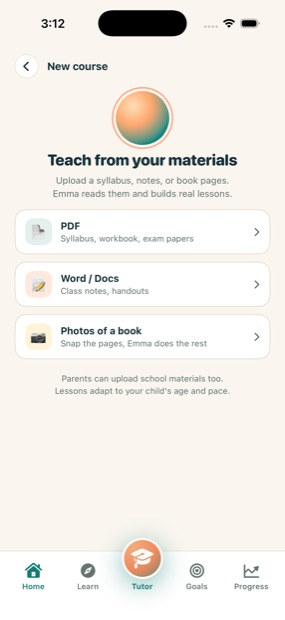
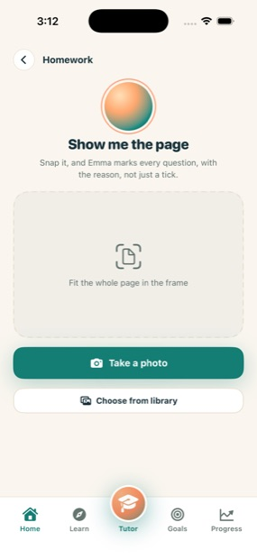
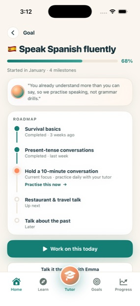
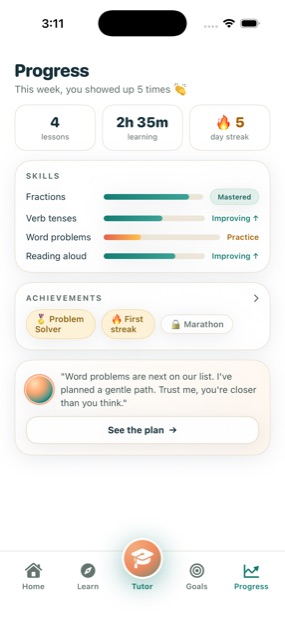
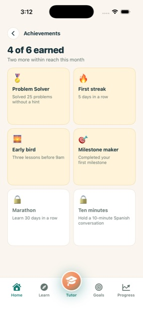
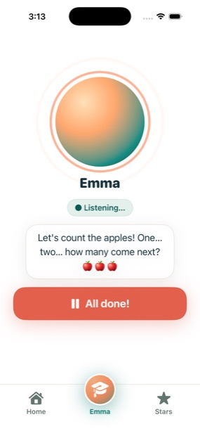
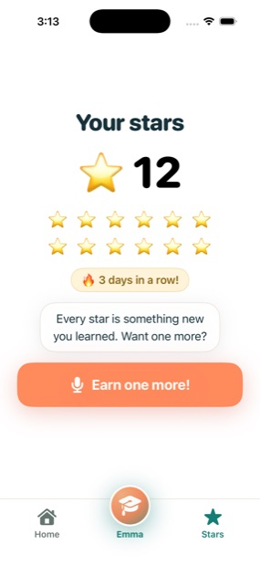
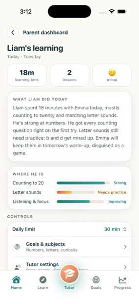
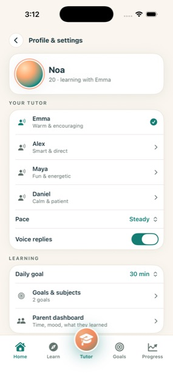
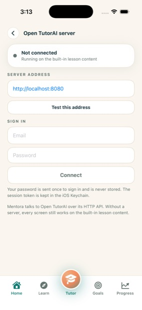
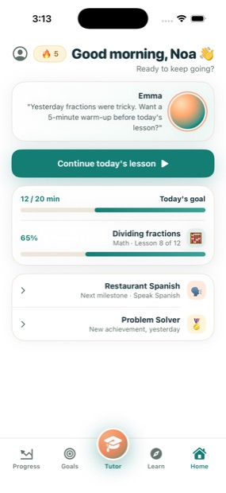
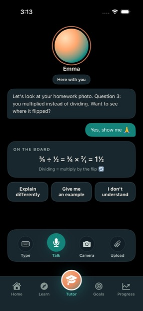
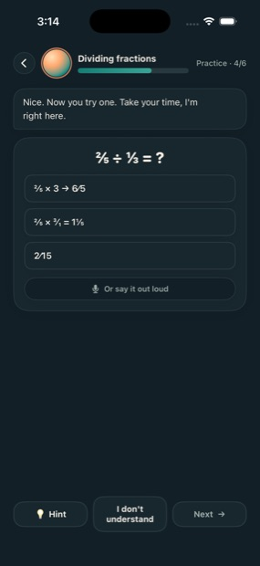
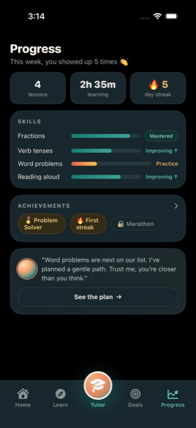